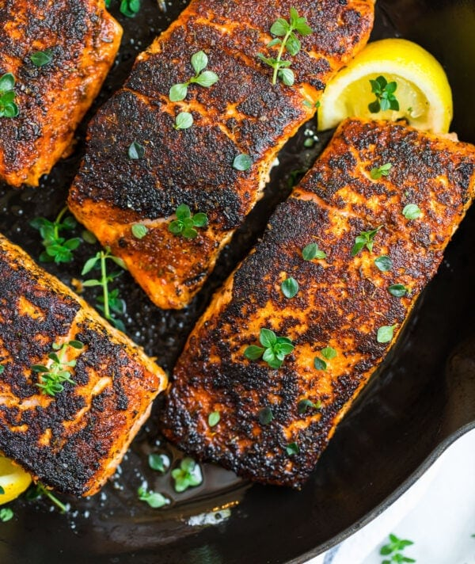

Blackened Salmon

Description
Using Butter and spices we can achieve restaurant level blackened salmon at home.
Ingredients
- Salmon
- Blackening Spices
- Brown Sugar
- Butter
- Lemon
Instructions
- Pat the salmon fillets dry, melt the butter, and stir the blackening rub ingredients together.
- Brush fillets with butter and rub spices onto them.
- Start the fllets flesh side down (Spice-Side), cook for a few minutes then flip.
- Top them with lemon juice.